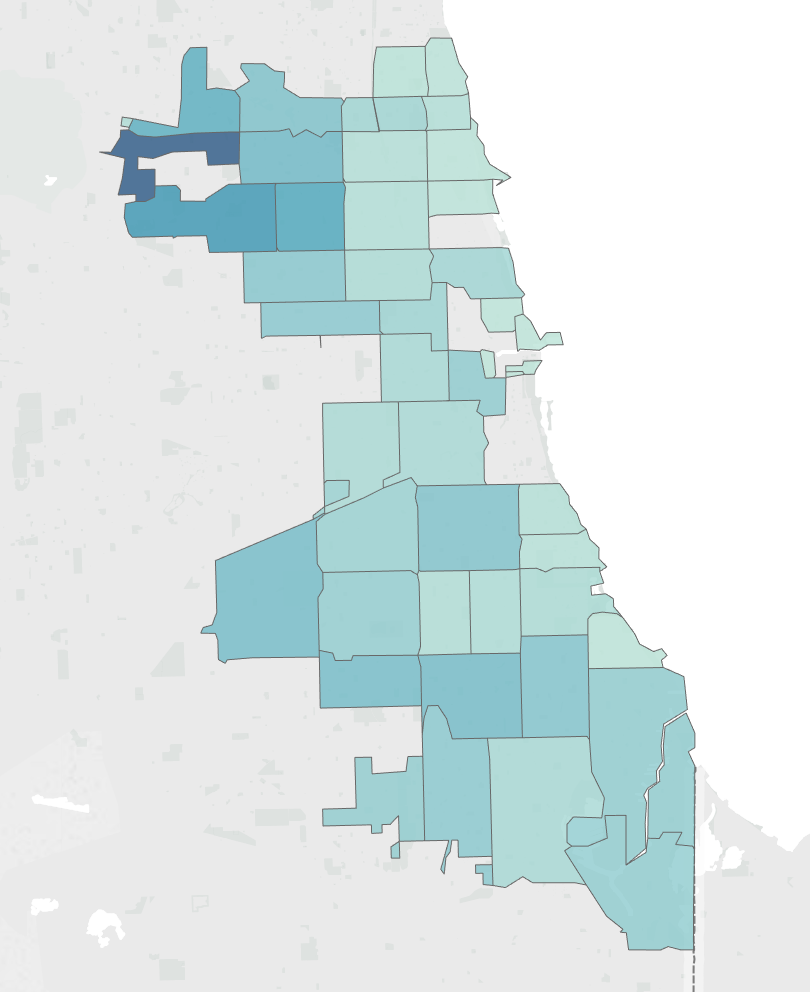

Toggle navigation
Menu
Home
Blog
About
Contact
Neil Liberman
Data Scientist
Analytics as a Means to Win More Basketball Games
Using offensive efficiency as a barometer for success in the NBA
Posted by Neil on February 23, 2017
Where to Open a Liquor Store in Iowa
Utilizing current liquor store, population, and income data to assess locations most suited for success
Posted by Neil on February 23, 2017
Data Science Salaries
An exercise in scraping data and utilizing natural language processing to determine keywords most correlated with higher salaries.
Posted by Neil on February 23, 2017
Bayesian Analysis of South American Terrorist Attacks
Using the START terrorist database, analyzed the terror attacks in South America 10 year pre and post Pablo Escobar's death to determine if the populations were statistically significantly different.
Posted by Neil on February 23, 2017
Predicting Occurence of West Nile Virus in Chicago
Utilizing weather data, predicted mosquito traps in Chicago most likely to contain West Nile Virus to help target areas to spray.
Posted by Neil on February 23, 2017

Older Posts →